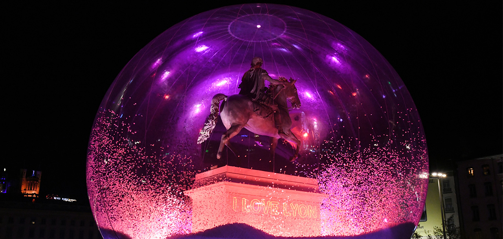

Actualités


Quelles dates cette année ?
Fête des Lumières 2025 à Lyon : dates, horaires et programmation
Fête des Lumières. Combien a coûté la déchetterie du Parc de la Tête d’or ?
La fête des lumières a refermé ses portes sur fond de polémique et de dégout face à la profusion d’œuvres politisées, totalement déconnectées de l’esprit du 8 décembre.